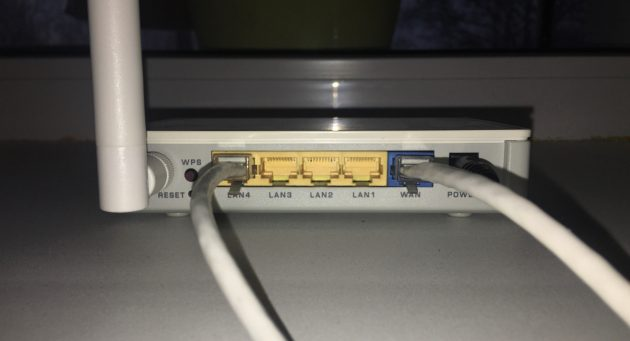
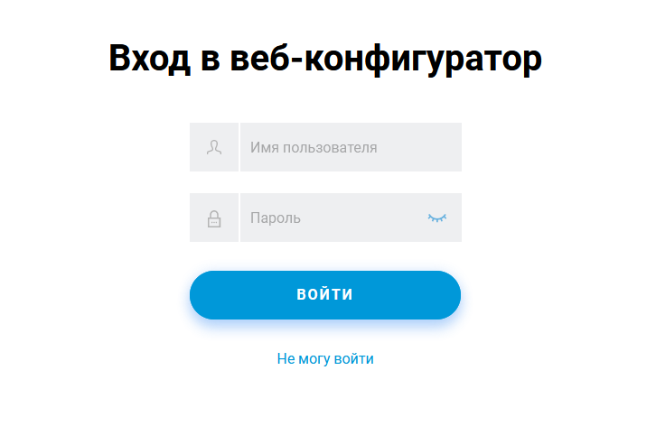
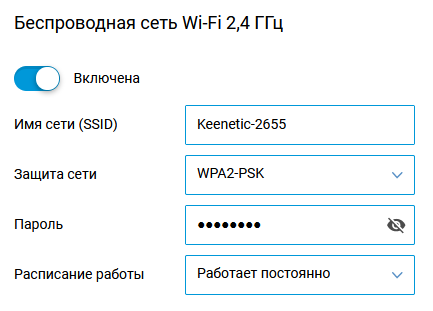
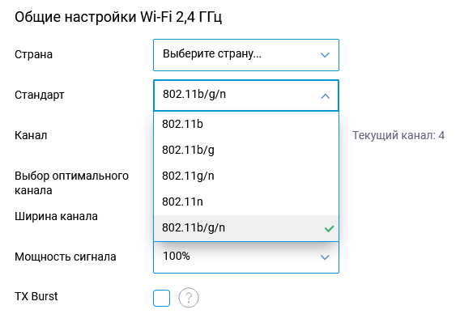

Онлайн-конспект по теме "Беспроводные технологии" для учеников 11-ых классов.
Выбор устройства является одним из ключевых пунктов создания домашней сети. Чтобы правильно выбрать роутер с подходящими характеристиками, стоит разобрать их все подробнее:
Стандарт Wi-Fi
Скорость передачи по проводу
Работа в диапазонах
Количество LAN-портов
Поддержка MESH
Максимальная скорость соединения
Мобильный выход в интернет
Многопотоковая передача данных
Хотя большинство устройств сейчас поддерживает подключение без провода "из коробки", некоторые такой функцией не обладают. В таком случае для их подключения к интернету придётся дополнительно купить LAN-провод подходящей длины или USB-приёмник Wi-Fi сигнала.
После распаковки маршрутизатора и установки его в подходящем месте, стоит посмотреть на его обратную сторону: подключить все необходимые проводные устройства в LAN-порты, а провод от провайдера подключить к разъёму WAN

Чаще всего, после подключения первого устройства, роутер автоматически предлагает перейти на страницу "Входа в сеть", она же и является панелью администрирования. Если этого не произошло, введите в строке любого браузера 192.168.1.1 или 192.168.0.1
После этого вы попадаете на подобную страницу авторизации:

Логин и пароль по умолчанию стоят admin-admin или 1-1.
В панели администратора множество разных настроек, от сетевых фильтров до лимитного подключения, однако разобраться с этим можно позже. Сейчас нужно найти параметры беспроводной сети, где и можно изменить её настройки:

Параметр защиты имеет несколько пунктов, где параметр WEP отвечает за передачу данных в зашифрованном виде, но без ограничения на подключение к сети, а праметры WPA2 и WPA3 за передачу в зашифрованном виде и защиту сети паролем. Самым распространённым на данный момент считается протокол WPA2-PSK, его мы и выберем.
В подпункте "Дополнительные настройки" можно выбрать стандарт, по которому будет работать ваша сеть.

Подробнее о стандартах можно узнать тут.